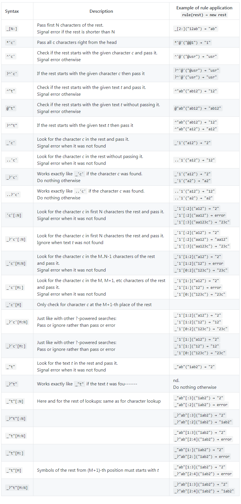

为什么称为神器，请看 此文章解析日志的性能和使用方便测试
0.安装
go get -u github.com/sirkon/ldetool
1.使用命令行如下
ldetool generate --package 包名 规则文件.lde
生成Golang规则类的文件，在Golang中调它的方法如下
//规则定义的类名
l := &Line{}
str :="hello world"
if ok, err := l.Extract(str);ok && err ==nil{
//Time是规则定的属性
fmt.Sprintf("%s",l.Time)
}
2.实际例子
2.1日志内容
27.154.70.117 - - [20/Nov/2018:20:23:56 +0800] 2 "GET http://7img1.tianlaikge.com/tv/homeimage/201709/shengridangao.zip HTTP/1.1" 200 842186 841382 "-" "-" "Dalvik/2.1.0 (Linux; U; Android 7.1.2; vivo Y79A Build/N2G47H)" "-" 219082621 "HIT" 27.159.73.35
2.2 ldetool规则文件
vim nginx.lde
Nginx =
IP(string) " "
^"- - [" Time(string) ']'
^" "Cost(uint32)" "
^'"'Request(string)'"'
^" "Status(int64)" "
ByteSend(int64)" "
BodyByteSend(int64)" "
^'"'Referer(string)'"'
^" "
^'"'Cookie(string)'"'
^' '
^'"'UserAgent(string)'"'
^' '
^'"'Xfor(string)'"'
^' 'ConnID(string)' '
^'"'Hit(string)'"'
^" "
ServerIp(string)
;
格式是
类名=
##IP则它义定的属性，因为golang的原因，首字母要大写，如果是id则要ID都得大写
IP(string) " "
;
3.规则详解
